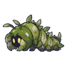
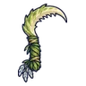
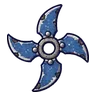

ทุ่งหญ้าสูงท่วมหัว
ดูบนแผนที่และวิธีไป วางแผนฟาร์ม
ชั้นล่างในป่ากองไฟ · Lv 14–22
ชั้นล่าง / ดันเจี้ยน
มอนในแมพ (8)
| มอน | Lv | ธาตุ | โซน |
|---|---|---|---|
| 14–19 | น้ำ | ||
 หนอนหญ้าซุ่ม | 14–21 | ดิน | วงหินกลางทุ่ง |
| 21–22 | ดิน | วงหินกลางทุ่ง | |
| 16–22 | ไม่มีธาตุ | ||
| 16–22 | ลม | วงหินกลางทุ่ง | |
| 16–22 | ลม | ||
| 16–22 | ลม | ||
| 24–24 | ลม |
อุปกรณ์ที่ดรอปในแมพนี้
| ของ | โอกาสสูงสุด |
|---|---|
| 0.5% | |
 เคียวคู่เขี้ยวใบหญ้า | 0.25% |
| 0.25% | |
 ดาวยักษ์จานสังกะสีแคมป์ | 0.25% |
| 0.25% | |
| 0.25% | |
| 0.25% | |
| 0.24% | |
| ชุดแคมป์ปิ้ง | 0.15% |
| 0.12% | |
| 0.12% | |
| 0.08% | |
| 0.06% | |
| 0.06% | |
| 0.06% |